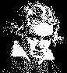

|

BEETHOVEN-HAUS RECITAL
Ergriffenes Schweigen nach dem Bekenntnis
Die Reihe "Beethoven International" im Kammer musiksaal des
Beethoven-Hauses bot als Abschlussveranstaltung, für diese Saison
ein hochkarätiges Erlebnis. Das verdankte sie der Pianistin Muza
Rubackyté. Schon nach den ersten Takten von Beethovens op. 31
Nr. 3 war evident, was für eine eindrucksvolle Interpretin da am
Werke war. So kam Beethovens pianistisch besonders glänzende
dritte der op.-31-Sonaten bestechend klar und präzise heraus, ganz
locker-leicht und trocken etwa im Scherzo und dann wieder, kraftvoll
zupackend. Es verwunderte nicht, dass es gleich schon die ersten
Bravo-Rufe gab. Muza Rubackyté, beeindruckte dann aber genauso
mit ihren Darstellungen zweier bedeutender Sonaten der' Romantik,
Chopins b-Moll-Sonate op. 35 "mit dem Trauermarsch" und Liszts
h-Moll-Sonate. Die unruhevolle, gehetzte und atemlose Haupt-Motivik des
ersten Satzes der Chopin-Sonate, das nervös-erregte Scherzo, die
wie gemeißelte düstere Statuarik des Trauer arsches und die
tröstliche Schönheit seines Mittelteils und das unheimlishe
Windessausen des Finales gewannen an diesem Abend besonders
eindringliche Gestalt. Und dennoch schien sich noch einmal eine
Steigerung an Expressivität beim gewaltigem h-Moll-Opus zu
ereignen. Dessen deutlich bekenntnishafter Ton war in solcher
Intensität nachvollzogen, dass nach Verhallen der letzten
tropfenden Töne zunächst ergriffenes Schweigen herrschte, ehe
der Schluss-Be aufbrandete.
Barbara Kaempfert-Weitbrecht General-Enzeiger-Bonn 07-06-2000

MIT
STEHVERMÖGEN Ter Bonn-BEETHOVEN-HAUS
Das Vilnius einmal polnisch war, fiel einem ein bei ihrem Chopinspiel
am Ende. Sicher, Muza Rubackyté hatte da auch schon die
b-Moll-Sonate vorgetragen, durchaus bravourös; störend hatte
man höchstens ihr manchmal lärmendes, undurchsichtiges
Fortissimo empfunden. Doch dann diese f-Moll-Zugabe: Welch leichte
Eleganz, nie dick aufgetragen, stattdessen in dieser
Leichthändigkeit hingeschlendert, wie sie auch polnische Pianisten
oft zeigen. Oder eben eine Litauerin aus Vilnius. Aufgetreten war Muza
Rubackyte am Sonntag im Kammermusiksaal des Beethoven-Hauses in der
Reihe "Beethoven International", in der die einst in Bonn
ansässigen Botschaften auch noch nach der Sanierung des
Beethoven-Hauses ihr grenzüberschreitendes Beethoven-Interesse
bezeugen. Diesmal die litauische Botschaft, die mit ihr eine
Vorzeigepianistin sozusagen noch sowjetisches Erbe präsentierte:
Dam hat sie reichlich Preise abgeräumt, unter anderem auch den 1.
Preis beim All-Unionswettbewerb. Das heißt was! Natürlicl
hat sie mit Beethovens G-Dur-Sonate op. 31,3 dem Geburtshaus erstmal
-ihre Reverenz erwiesen. Das Menuetto wie getupft, das Presto con fuoco
mit heftigem Elan: Das imponierte wie auch in Chopins b-Moll-Sonate ihr
pianistischer Zugriff in den Ecksätzen, die sie mit großer
Übersicht spielte. Grenzen im technischen Bereich scheint es
für sie nicht zu geben, was dann auch den Ruf als zt-Spielerin
plausibel machte, der ihr vorausgeht. Sie hat es deshalb bei Liszt auch
an nichts fehlen lassen, sondern gleich die h-Moll-Sonate ins Programm
genommen, was dann mit drei großen Sona-ten auch ihr
Stehvermögen insrechte Licht rückte. Bei Liszt machte sie
auch den besten Ein-druck. Wie leicht sie diese gro-ßen, schweren
Zusammenhän-ge darstellte, die bei anderen Pianisten oft wie mit
einem Übermaß an Oktavgängen be-schwert zu sein
scheinen. Nichts davon bei ihr. Auch die Lyrik klang. Nein, diese
litauische Pianistin, inzwischen auch Professorin in Vilnius, war keine
schlechte Begegnung.
BONNER RUNDSCHAU, Bonn, Germany 07-06-2000